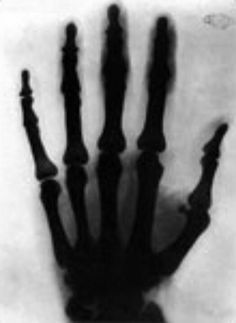

#9 HE PLAYED A KEY ROLE IN THE DEVELOPMENT OF X RAYS
Noticing damage to his photographs, Tesla began investigating the cause of the problem in 1894. But his research
was burnt in the fire that consumed his lab in 1895. A few months later in December, Wilhelm Conrad Roentgen went
public with his discovery of “Roentgen Rays“ or X Rays. Despite the discovery, Tesla continued his experiments trying
to construct his own machine which would produce images he called Shadowgraphs. Tesla correctly realized that strong
shadows could be produced only at great object-film distances and with short exposure times; and that thick walls
produced rays with greater penetrating power. He was also the first to comment on the biological hazards of X rays.
He took an X-ray or shadowgraph of a foot with a shoe on it and sent it with a congratulatory letter to Roentgen.
Roentgen in turn wrote “Dear Sir! You have surprised me tremendously with the beautiful photographs of wonderful
discharges and I tell you thank you very much for that. If only I knew how you make such things! With the
expression of special respect I remain yours devoted, W. C. Roentgen.“ (Courtesy of the Tesla Museum, Belgrade, Serbia;
document no. MNT, CXLIV, 152.)